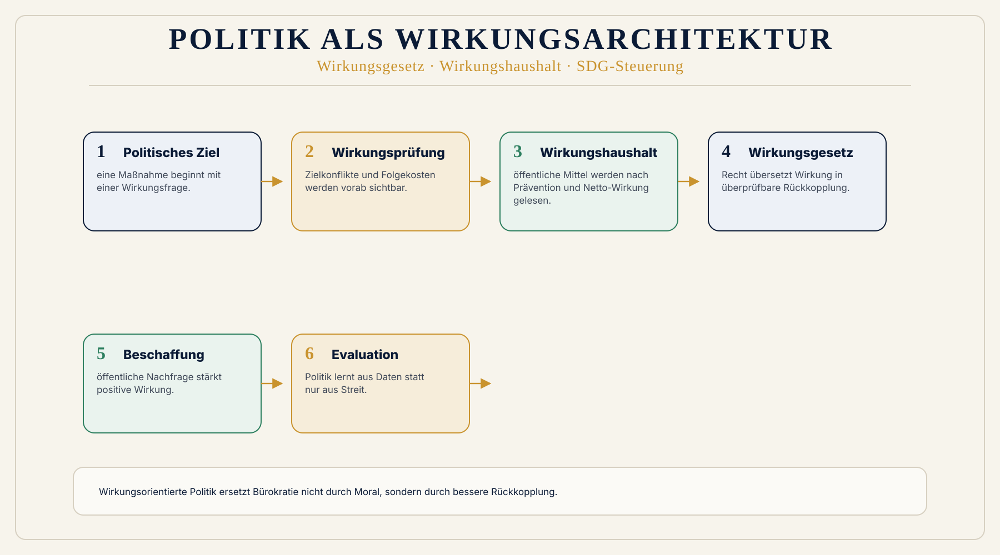

Symbolpolitik
Maßnahmen werden oft nach Sichtbarkeit bewertet, nicht nach tatsächlicher Wirkung.
 Wirkungsökonomie
Wirkungsökonomie
Für wen · Politik
Vom Reparaturstaat zur Wirkungsarchitektur.
Politik steht heute unter Druck, immer mehr Krisen gleichzeitig zu reparieren: Klima, Wohnen, Pflege, Energie, Digitalisierung, Migration, Desinformation, Staatsfinanzen und Vertrauensverlust.
Doch viele politische Antworten setzen zu spät an. Sie reparieren Symptome: mit Förderprogrammen, Subventionen, Sonderregeln, Verboten, Ausnahmen und immer neuen Nachweispflichten.
Die Wirkungsökonomie setzt früher an: bei den Signalen, nach denen Preise, Steuern, Kapital, öffentliche Haushalte, Verwaltung und politische Programme wirken.
Sie macht Politik nicht technokratischer. Sie macht Politik wirksamer.
Warum Politik Wirkung braucht
Politik wird heute oft daran gemessen, ob sie handelt: ein Gesetz, ein Förderprogramm, ein Paket, ein Kompromiss, ein neuer Haushaltstitel. Doch Handlung allein ist noch keine Wirkung.
Ein Gesetz kann gut gemeint sein und trotzdem Zielkonflikte verschärfen. Eine Subvention kann kurzfristig entlasten und langfristig falsche Strukturen stabilisieren. Ein Förderprogramm kann hilfreich sein und zugleich neue Bürokratie erzeugen. Ein Haushalt kann wachsen und trotzdem wenig verbessern.
Das Problem liegt nicht darin, dass Politik zu wenig tut. Das Problem liegt darin, dass Politik oft zu spät sieht, was ihr Handeln tatsächlich verändert.
Die Wirkungsökonomie verschiebt deshalb die Grundfrage: Nicht: Was wurde beschlossen? Sondern: Welche Zustände verändern sich dadurch - für Mensch, Planet und Demokratie?

Was heute falsch läuft
Maßnahmen werden oft nach Sichtbarkeit bewertet, nicht nach tatsächlicher Wirkung.
Wenn Preise, Steuern und Märkte Schäden nicht abbilden, muss Politik später mit immer mehr Regeln gegensteuern.
Klima, Wohnen, Gesundheit, Bildung, Migration, Digitalisierung und Demokratie werden oft getrennt bearbeitet, obwohl sie systemisch zusammenwirken.
Öffentliche Mittel werden nach Titeln, Ressorts und Ausgabenvolumen geplant - nicht konsequent nach Netto-Wirkung, Prävention und vermiedenen Folgekosten.
Wenn Bürger:innen erleben, dass Schädliches billig bleibt und Verantwortliches teurer ist, wirkt Politik ungerecht, widersprüchlich oder machtlos.
Die WÖk löst diese Probleme nicht durch mehr Zentralsteuerung, sondern durch bessere Rückkopplung.
Der bessere Rahmen
Die Wirkungsökonomie gibt Politik einen gemeinsamen Prüfmaßstab, ohne politische Unterschiede abzuschaffen.
Demokratische Parteien müssen nicht dieselben Antworten geben. Aber sie können sich auf dieselbe Frage einigen: Welche Wirkung erzeugt eine Maßnahme für Mensch, Planet und Demokratie?
Damit wird Politik nicht unpolitisch. Im Gegenteil: Zielkonflikte werden sichtbarer. Verteilung wird ehrlicher. Folgekosten werden früher benannt. Prävention wird messbar. Und politische Entscheidungen können besser begründet, überprüft und korrigiert werden.
Politik entscheidet nicht nur nach Druck, Stimmung oder kurzfristiger Sichtbarkeit, sondern nach Wirkungspfaden, Datenlage, Zielkonflikten und Folgekosten.
Wenn Wirkung früher in Preise, Steuern, Beschaffung und Haushalte zurückgekoppelt wird, müssen weniger Schäden später durch Sonderprogramme repariert werden.
Bürger:innen sehen besser, warum eine Maßnahme beschlossen wurde, welche Wirkung erwartet wird und wie sie überprüft wird.
Öffentliche Mittel fließen stärker dorthin, wo sie Prävention, Resilienz und positive Netto-Wirkung erzeugen.
Die WÖk ist kein Parteiprogramm. Sie ist ein Wirkungsmaßstab, auf den sich demokratische Akteure trotz unterschiedlicher Werte und Prioritäten beziehen können.
Politik wird weniger rückwärtsgewandt und reparierend, sondern vorausschauender, lernfähiger und resilienter.
Vorher / Nachher
Heute
Gesetze werden oft nach politischem Kompromiss und Ressortlogik beschlossen.
Wirkungsökonomie
Gesetze werden zusätzlich nach Wirkungspfad, Zielkonflikten und Folgekosten geprüft.
Heute
Mittel werden nach Ausgabenvolumen, Ressort und Haushaltslogik verteilt.
Wirkungsökonomie
Mittel werden nach Netto-Wirkung, Prävention, Resilienz und Wirkungshaushalt priorisiert.
Heute
Der Markt sendet oft falsche Preissignale, weil Folgekosten externalisiert werden.
Wirkungsökonomie
Preise und Steuern tragen mehr Wirkungswahrheit.
Heute
Immer neue Einzelregeln reparieren Schäden nachträglich.
Wirkungsökonomie
Einheitliche Wirkungslogik reduziert widersprüchliche Nachsteuerung.
Heute
Politische Debatten kreisen oft um Schuld, Symbolik und kurzfristige Entlastung.
Wirkungsökonomie
Debatten können stärker über Wirkung, Daten, Zielkonflikte und Rückkopplung geführt werden.
Heute
Verantwortung wird oft politisch verschoben.
Wirkungsökonomie
Verantwortung wird an Wirkungspfaden sichtbar gemacht.
Wirkungspfad
Der entscheidende Unterschied liegt in der Rückkopplung. Wirkung bleibt nicht im Bericht. Sie verändert Haushalt, Recht, Beschaffung, Steuern, Förderung und Verwaltung.
Konkretes Beispiel
Im heutigen System werden bezahlbares Wohnen, energetische Sanierung, Mietrecht, Baukosten, Stadtentwicklung und Klimaschutz oft getrennt bearbeitet. Das erzeugt Zielkonflikte: Sanierung kann Mieten erhöhen. Mietbegrenzung kann Investitionen bremsen. Neubau kann Flächen versiegeln. Förderprogramme können Bürokratie erzeugen.
Die Wirkungsökonomie fragt anders: Welche Wohnmodelle erzeugen positive Netto-Wirkung auf Bezahlbarkeit, Energie, Gesundheit, Quartier, Flächenverbrauch und demokratische Stabilität?
Dadurch wird sichtbar: Eine energetische Sanierung mit stabiler Miete, Mieterstrom und Quartiersnutzen wirkt anders als eine Luxussanierung mit Verdrängung. Beide sind Investitionen. Aber sie erzeugen nicht dieselbe Wirkung.
Grenzen
Politik entscheidet nicht zentral, was produziert wird. Märkte, Wettbewerb, Eigentum und dezentrale Entscheidungen bleiben.
Bewertet werden Wirkungspfade, Daten, Zielkonflikte und Rückkopplung - nicht private Meinungen.
Die WÖk kann Programme analysieren, aber sie ersetzt keine demokratische Entscheidung.
Wissenschaft und Daten bereiten Wirkung sichtbar auf. Entscheiden muss demokratisch verantwortete Politik.
Die WÖk bewertet keine Bürger:innen als Personen. Sie analysiert Produkte, Maßnahmen, Programme, Kapitalflüsse, Organisationen und Wirkungspfade.
Wirkung bleibt komplex. Deshalb braucht es Evaluation, Korrektur, Transparenz und Lernfähigkeit.
Demokratische Anschlussfähigkeit
Die Wirkungsökonomie verlangt nicht, dass demokratische Parteien ihre Unterschiede aufgeben. Konservative, Liberale, Sozialdemokrat:innen, Grüne und Linke können unterschiedliche Prioritäten setzen. Aber sie können sich auf einen gemeinsamen Prüfmaßstab beziehen: Welche Wirkung entsteht?
Für Konservative ist die WÖk anschlussfähig, weil sie Ordnung, Verantwortung, Eigentum mit Haftung, Generationenverantwortung und Bürokratieabbau stärkt.
Für Liberale ist sie anschlussfähig, weil Markt, Wettbewerb, Innovation und dezentrale Entscheidung erhalten bleiben - aber bessere Informationen und ehrlichere Preise entstehen.
Für Sozialdemokrat:innen ist sie anschlussfähig, weil Arbeit, Pflege, Wohnen, soziale Sicherheit, Teilhabe und faire Verteilung wirkungslogisch sichtbar werden.
Für Grüne ist sie anschlussfähig, weil Klima, Biodiversität, Kreislaufwirtschaft und planetare Grenzen nicht moralisch, sondern steuerungslogisch verankert werden.
Für Linke und soziale Bewegungen ist sie anschlussfähig, weil Ausbeutung, Ungleichheit und Kapitalmacht sichtbar werden - ohne in zentrale Planwirtschaft zurückzufallen.
Die WÖk entscheidet nicht, welche Partei recht hat. Sie macht sichtbar, welche Wirkung politische Entscheidungen erzeugen.
Handlungsbox
Der erste Schritt ist nicht die perfekte Reform. Der erste Schritt ist, politische Entscheidungen nach Wirkung lesbar zu machen.
Evidenz / Stand